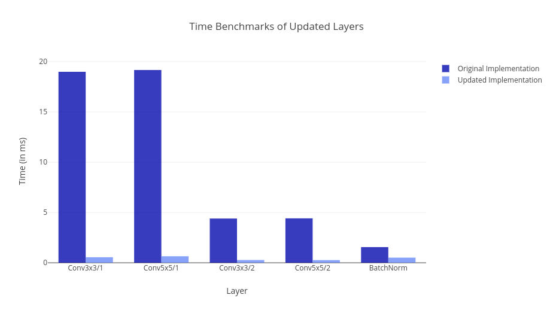
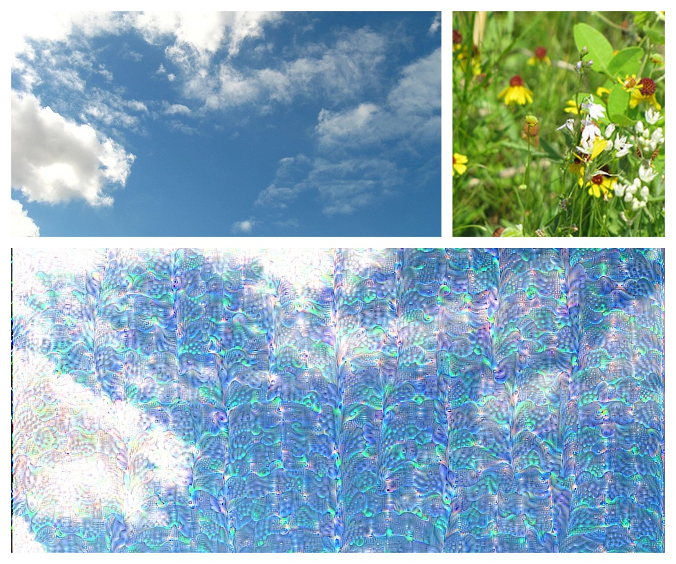

GSoC 2018：增加更新的功能并加快Flux中的卷积
在整个夏天，我一直致力于提高Flux的计算机视觉功能。我的具体工作是为Flux模型动物园添加更新的模型，实现一些新功能，并提高前一层的速度。 具体来说，我为Convolutions加速了18倍，BatchNorm加速了3倍。
我在GSoC 2018期间的工作简述
我列出了我在这个项目中所做的所有必要的PR。其中一些是合并的，一些是未合并的，有些甚至是正在进行的工作。我们只讨论主要PR，省略错误修复和小补丁。所以他们在这里
在该项目的过程中开发了以下新包。
PR漫游
让我们逐一检查这些变化。
为CUDNN BatchNorm添加包装器
Flux目前缺少BatchNorm的专用GPU内核。 BatchNorm是神经网络最重要的层之一，它们通过处理内部均值协方差转换来加速训练。 到目前为止，我们使用Flux CPU代码进行BatchNorm（显然会很慢）。 所以这个PR的目的是通过包裹CUDNN Batchnorm层并将其与Flux AD集成来解决这个问题。 速度（和内存消耗）改进的一些亮点是1.860秒（1367个分配：50.92 KiB） - > 2.782毫秒（276个分配：10.38 KiB）。 我正在对224 * 224 * 100 * 10大小的阵列的BatchNorm（100）的总时间（前向+后向）进行基准测试。 这个PR尚未合并。在合并之前，需要将其更新为Julia 1.0（Flux master支持）。
加速Flux中的CUDA卷积
我在Flux和Pytorch之间进行了基准测试（请继续阅读以了解更多信息）。 我们继续介绍神经网络，并在Flux Conv Layer中发现了一些问题。 主要的瓶颈在于我们正在进行的广播偏见增加。 因此，我们使用cudnnAddTensor作为7.1之前的CUDNN版本而不是使用广播偏差添加。 对于7.1以上的任何东西，我们转向使用cudnnConvolutionBiasActivationForward，激活始终是身份，最后调度其他激活。 使用此更新的速度的主要改进反映在DeepLearningBenchmarks repo中。 此外，此PR依赖于CuArrays PR，因此在CuArrays合并之前不能合并。 此外，它需要更新才能适应Julia 1.0。
Flux和NNlib中的天然Julia深度卷积
深度可分离卷积对于深度神经网络的移动应用至关重要。 MobileNets和Xception Net直接使用这种形式的卷积。 因此，深度学习库必须支持开箱即用的这种卷积。 首先，这涉及在NNlib中实现代码的CPU版本。 然后我们只需要将深度卷积连接到Flux AD中。 开箱即用支持还允许在Metalhead.jl和model-zoo中添加一些模型，以便轻松定义。 作为此主题未来工作的一部分，需要对此算法进行CUDNN绑定。
添加对更多CUDNN卷积算法的支持
有各种各样的卷积算法。 所有这些都使用输入张量的属性和滤波器张量，并具有为高效卷积而开发的非常专业的程序。 值得庆幸的是，CUDNN内置了这些专门开发的卷积例程。 因此，我们需要将其直接集成到CuArrays中，并公开其API以供其他软件包（如Flux）使用。 简单卷积操作的包装器是用CuArrays预先编写的。 所以我们只需要为工作空间分配创建包装器。 此PR添加必要的包装器并更改卷积函数定义以公开API以进行算法更改。 因此，对于最终用户，唯一的变化是更改关键字参数算法。
添加包装器以获得更多卷积和激活功能
在对Flux Convolution Code进行基准测试时，我们找出了Convolution Bias的Backward Pass中出现的一些主要瓶颈。 因此，自然的选择是包装有效计算偏差梯度的CUDNN函数。 此外，我们能够包含一个函数，用于同时应用激活和添加偏差。 要使用此函数，cudnnConvolutionBiasActivationFunction我们需要包装Activation Forward和Backward Pass函数。 现在让我们看看我们通过此更新实现了哪种速度改进。

修复新Metalhead模型的API
最近，Metalhead添加了一些模型，如Google LeNet和RESNET(特别感谢Ayush Shridhar[@ayush1999]在ONNX.jl上的工作)。 但是，此代码是自动生成的，不一定是人类可读的。此外，我们唯一能做的-我们-这些模型-就是做预测。 我们不能用它来提取特征。因此，我们从模型动物园移植了一些模型，并手动加载重量到其中。 有关Metalhead的更详细用法，请访问这里。
提高Metalhead模型的准确性
现有加载模型到Flux的准确性非常糟糕。 我们已经尝试了各种预处理步骤，但大部分都没用。 经过一些试验和错误，我们能够找出主要原因。 我们使用权重进行交叉关联操作来代替循环操作。 目前，这是通过在加载之前手动翻转权重来解决的。 作为一个长期解决方案，我们公开参数以在NNlib中的卷积和互相关之间进行选择，并最终在Flux中进行选择。
在Metalhead中添加前沿的计算机视觉模型
该项目的这一部分仍处于起步阶段。 这项工作的大部分工作已经完成（但主要分散在模型动物园）。 模型动物园的目标主要是允许用户在其代码中导入各种模型。 模型可能未经过培训（目前大多数模型都是这样）。 因此，主要动机是如果我们想要训练一个ResNeXt模型，我们就不必重新定义已经由某人完成的事情。 我们应该能够毫不费力地加载模型。
model = VGG19() # This fetches an untrained VGG19 model
model_trained = trained(VGG19) # Get the trained VGG19 model. This is the same as previously calling VGG19()
trained(VGG11) # We get an error as we don't currently have a trained VGG11 model but VGG11() works fine
包的简要说明
DeepDream.jl
该软件包提供了一个简单的API，可以在所需的图像上生成你的想法。 您需要提供图像，选择您想要的想法类型以及要使用的模型。 该套装依靠Flux和Metalhead的训练模型。

上面的图像是用 深度之梦 导航生成的。
CNNVisualize.jl
多年来，为了理解神经网络的功能，已经开发了几种可视化算法。这个软件包旨在实现这样的算法。其中的大部分，都将为Metalhead开箱即用。 这是目前正在进行的工作包，但是，它的大部分已经完成。
下面是这个程序包的一个小演示
FastStyleTransfer.jl
这是实时样式转移和超分辨率的文章感知损失的实现。 这篇论文有一些明显的偏差。 我们使用了Flux目前可用的最佳层实现。 至于确切的架构，它仍处于发展阶段。 我们提供三种预先训练的模型。 API保持尽可能简单。
以下是MonaLisa的一个小样式转移示例
GSoC 2018中完成的工作概述
从上面的PR描述中可以看出，我的很多工作都是围绕Flux模型进行基准测试，并尽可能地加速。 我的工作的最初部分是为Flux模型动物园添加一些新的计算机视觉模型。 因此我们在Flux模型动物园中添加了VGGNets，ResNets，DenseNets等模型。 此外，我们能够将其中一些模型移植到Metalhead软件包中，该软件包专门用于解决计算机视觉问题。 经过JuliaLang社区的一些人的大量实验和帮助，我们能够解决我们遇到的一些准确性问题。 接下来，我们继续开发一个包来执行FastStyleTransfer。 它允许用户轻松地训练他们的模型，并且可以非常轻松地对图像进行风格化。 我们还能够训练一些密集网络模型并重新创建MURA论文的结果。
接下来是为Flux中的当前实现执行基准测试，并尽可能地解决瓶颈问题。 因此，我们为Flux和Pytorch编写了基准测试脚本，并对它们进行了比较。 事实证明，Pytorch第一次比Flux快得多。 但是，我们能够找到这种速度慢的原因。 事实证明，这是因为缺少一个专门用于广播加法的内核及其后向传球。 因此，直接的解决方案是包装一些CUDNN函数并将它们与Flux集成。 这样做实际上减少了这些层所花费的时间。 目前，我们与Pytorch的每个层都有时间。
JuliaCON的经验
我能够在伦敦参加JuliaCon 2018。 感谢 Julia Project和 NumFOCUS 为这次旅行提供资金。 我有机会就我在GSoC期间所做的工作发表了一张海报。 这是我参加的第一次会议，所以这确实是一次非常独特的体验。 我能够与其他人分享我的工作，甚至得到了一些有价值的建议。 此外，我发现了一些新的很酷的开源项目，我希望将来能够为此做出贡献。 最后，在Slack与我交往的人们见面总是很愉快的。
为什么要使用Julia和Flux进行深度学习？
关于 Julia 如何发挥其作为机器学习语言的作用，有一篇精彩的文章。 该帖子从机器学习领域经验丰富的人的角度总结了原因。 在这里，我将从外行人的角度介绍原因。
只需考虑在一个流行的框架中实现标准的计算机视觉模型，如Pytorch或Tensorflow。 这很简单，对吧？ 只需使用他们的API调用必要的图层，您就完成了。 现在想象一下，必须定义标准库中不存在的东西。 您需要首先在C ++中编写自定义图层（前提和后向传递，以防万一），如果这不够难，您可以在CUDA C中为该代码定义GPU内核。现在，您可以集成此图层 （显然在Python中）根据Pytorch或Tensorflow的特定API。 祝你调试SegFaults好运。
现在让我们看看你如何在Flux中做到这一点。 首先，使用CUDAnative在Julia及其CUDA GPU版本中编写图层（为Tim Besand[@maleadt]的出色工作喝彩）。 至于集成到Flux AD中，您只需使用@grad宏。 就这么简单！
您可能遇到的一个抱怨是许多训练有素的模型无法使用。 但是，由于ONNX.jl和Keras.jl，问题或多或少得到了解决。 这两个都是Ayush Shridhar的作品。 使用这些模型，您可以使用使用Pytorch或CNTK训练的模型，只要它们以ONNX格式存储即可。 此外，现在您还拥有各种强化学习模型，如AlphaGo.jl（Tejan Karmali）， 除了模型动物园和Metalhead.jl中的计算机视觉模型外，还使用Flux编写。
该项目的未来工作
这个项目与我最初提出的建议有很大的偏差，但主要是好的。 作为该项目的一部分实现的东西肯定有助于更快地训练Flux中的深度神经网络，并且还有助于使用Flux创建更复杂的模型。 对于本项目的未来而言，令人兴奋的事情是在本期中提出的Metalhead中完成对象分类模型的添加的问题。 另一个有趣的事情是在一个地方使用Flux构建的一些物体检测模型。 此外，我们应该继续解决目前尚未解决的瓶颈问题。 我们应该继续为 DeepLearningBenchmarks 添加基准，这对于识别瓶颈至关重要。
鸣谢
首先，我要感谢Google组织Google Summer of Code，这给了我与开源社区合作的绝佳机会。 另外，我感谢NumFOCUS和JuliaLang选择我参与这个项目。 接下来，我要感谢我的导师Viral Shah和Mine Innes的不断支持，并指导我完成我的项目。 最后，让我感谢杰出的JuliaLang社区清除我的疑虑并成为学习的绝佳来源。